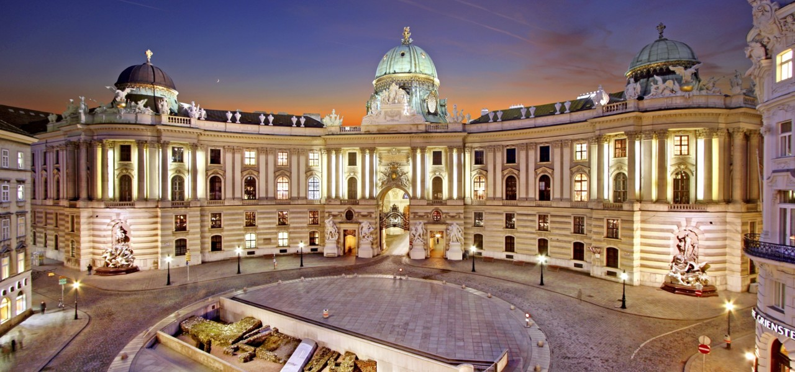

오스트리아 빈
빈(독일어: Wien)은 오스트리아의 수도입니다. 영어 명칭인 비엔나(영어: Vienna)로도 알려져 있습니다. 도나우강이 도시를 관통하며 인구는 약 190여만 명이고 대도시권 광역 인구는 약 230여만 명입니다. 오스트리아 북동부에 위치한 빈은 알프스 동쪽 끝자락인 빈 분지 위에 지어졌으며, 오늘날 빈 도심에 해당하는 가장 오래된 정착지는 도나우강의 남쪽 둔치를 따라 형성되었으며 나중에 강 반대편으로 확장되었습니다. 해발고도는 최저 151미터에서 최고 542미터입니다. 면적은 414.65 제곱킬로미터에 달해 오스트리아에서 가장 넓은 도시입니다. 쾨펜의 기후 구분에 따르면 빈의 날씨는 서안 해양성 기후로, 선선한 여름과 비교적 따뜻한 겨울이 특징입니다. 강수량은 7월과 8월에 집중되어 있으며 각각 66.6mm와 66.5mm 수준의 비가 내립니다. 6월부터 9월까지의 평균 최고 기온은 약 21°C ~ 27°C사이이며, 겨울 평균 기온은 0°C를 조금 넘습니다. 봄은 일교차가 심하고 가을은 서늘하며, 11월에는 눈이 내릴 가능성이 높습니다. 강수량은 일반적으로 연간 약 550mm로, 지역별로 상당한 차이가 있습니다. 겨울에는 눈이 자주 오지는 않지만, 오스트리아의 서부 및 남부 지역과 비교하면 많은 편입니다.
크리스마스 마켓
빈의 크리스마스 마켓은 유럽에서 가장 유명한 크리스마스 시장 중 하나입니다. 매년 11월부터 12월까지 열리며, 아름답게 장식된 광장과 전통적인 수공예품, 따뜻한 음식들을 즐길 수 있습니다. 오스트리아에서는 성스러운 크리스마스 날의 약 4주 전부터 예수님 탄생을 축하하는 준비가 시작됩니다.
비엔나 시청사 앞 광장에 대규모의 크리스마트 마켓과 스케이트장이 설치됩니다. 중앙에는 간이 매장이 줄지어 들어서고, 핸드메이드 크리스마스 장식, 그리스도의 탄생을 재현한 모형 크리페(krippe), 스파이스 부케, 유리 공예, 도자기, 텍스타일 공예, 가죽 제품, 액세서리, 목제 완구, 수공예품 둥을 판매합니다. 향신료가 들어간 렙쿠헨(Lebkuchen) 쿠키와 우리에게 펀치로 잘 알려진 푼쉬(Punsch) 칵테일 등의 먹거리도 충실합니다.
크리스마스 마켓 위치
시청 광장 (Rathausplatz), 빈, 오스트리아
음식
오스트리아의 요리는 기본적으로 오스트리아-헝가리 제국의 귀족 요리를 기본으로 하고 있으며, 몇 세기에 걸쳐 유럽 최고 가문으로 명성을 누린 합스부르크 가문이 다스린 국가의 요리답게 굉장히 화려하고 다양한 식재료를 사용하는 것으로 유명합니다. 주로 소고기, 돼지고기, 야채를 다채롭게 사용하는 것으로 명성이 높습니다. 또한 슈트루델에 사과를 넣어 만든 아펠슈트루델이 유명한데, 사과 외에 커스터드나 밀크크림, 치즈 등을 넣어 만드는 과자들도 유명합니다.
오스트리아를 대표하는 요리들 중에서는 비너 슈니첼, 팬케이크 디저트인 카이저슈맘, 고기 경단인 클로스, 송아지고기 등을 육수에 삶아내어 먹는 타펠슈피츠, 초콜릿과 살구잼을 곁들여 먹는 케이크인 자허토르테 등이 있습니다. 또한 허브, 감자, 페퍼민트 등을 도넛에 넣어 튀기고 버터 소스 등과 곁들여 먹는 요리 등도 유명합니다. 주로 샐러드와 함께 먹습니다. 또한 국민적 음악가인 모차르트를 상징으로 하는 모차르트쿠겔 등 단 디저트와 함께 먹는 커피 문화도 굉장히 대중적인데, 오스트리아는 매년 8kg 이상 커피를 섭취하며 1인당 가장 높은 비율의 커피 섭취량을 자랑하고 있습니다.
여행하기 좋은 시기
11월 중순부터 12월 말까지 크리스마스 마켓이 열리며, 이 시기가 가장 적합합니다.
소소한 정보들
- 추천 옷차림: 따뜻한 겨울옷, 장갑, 목도리
- 여행 경비: 약 100~150 유로(1일 기준)
- 화폐 단위: 유로 (EUR), 1유로 = 약 1400원